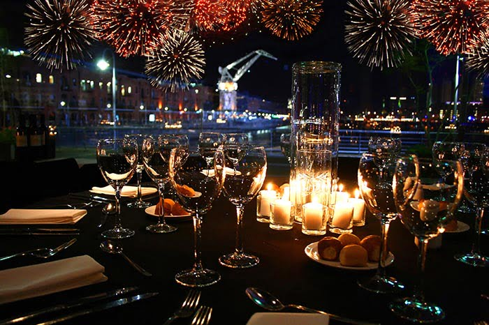

Novedades
Tango Show es una joya escondida en el corazón de una de las galerías más antiguas de la ciudad. El salón de baile está totalmente decorado en tonos dorados y terciopelo rojo. Es literalmente un tesoro rescatado de la Belle Époque porteña. El menú es el complemento perfecto para la velada. Es una combinación de las clásicas comidas argentinas con nuestras carnes y empanadas mezcladas con cucina italiana (que ahora también es muy argentina) añadiendo los típicos ravioles italianos. Todo ello ante las exquisitas y elaboradas opciones de postre. Tango Show es la mejor experiencia que ofrece las tradiciones del tango con la modernidad del nuevo tango. Y la oportunidad de vivir el tango de primera mano uniéndote a la lección de tango GRATIS.
Celebrá Navidad y Fin de Año al estilo Group2 con un menú diseñado especialmente para disfrutar y festejar en familia y con amigos. Como siempre con los mejores platos, excelentes vinos y espumantes, una selección de deliciosas guarniciones y una riquísima degustación de helados artesanales. Te invitamos el 24 y el 31 de diciembre a vivir una experiencia única.
